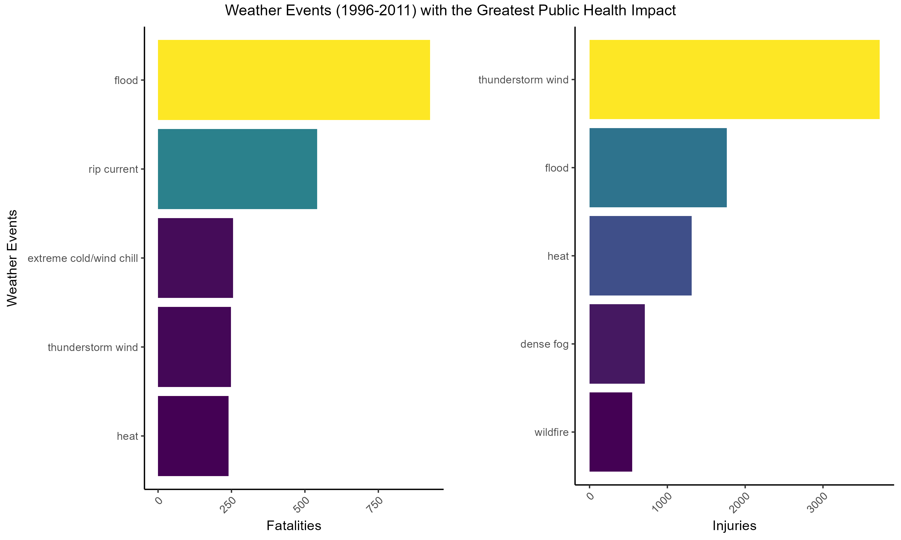
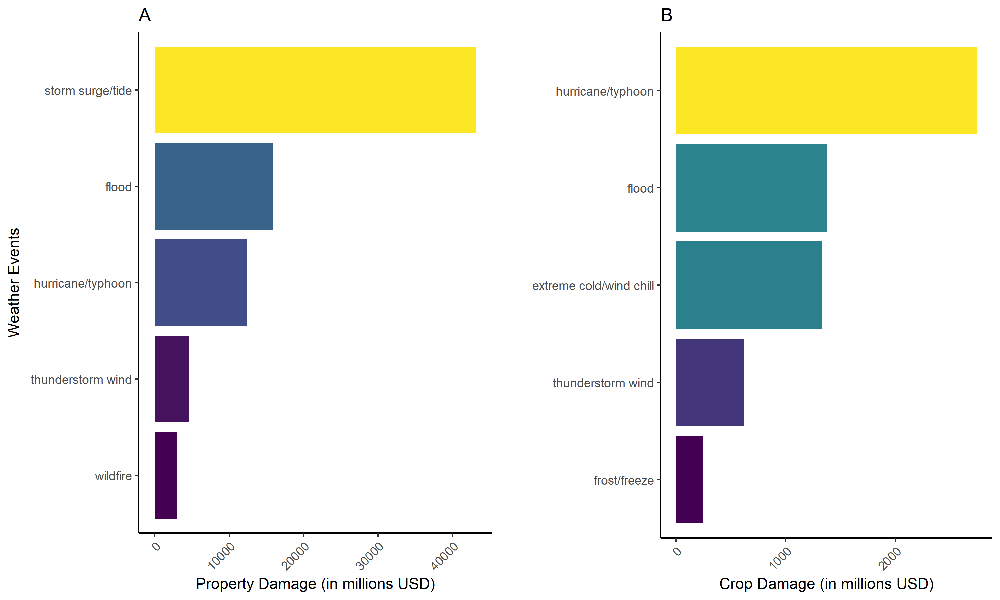
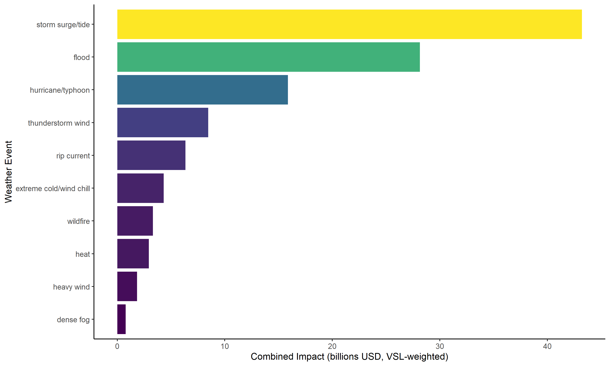
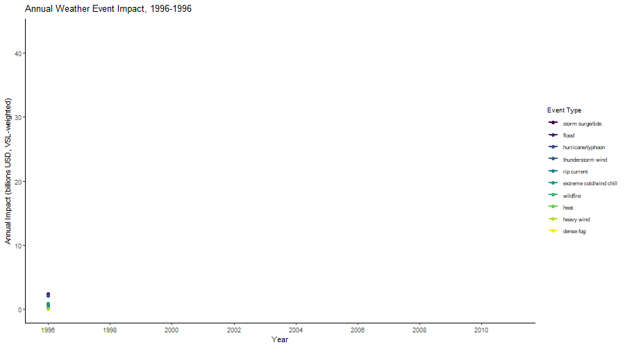

Weather Events with the Greatest Human and Economic Impacts in the United States (1996–2011)
Executive Summary
Problem: Severe weather events cause fatalities, injuries, and billions of dollars in property and crop damage each year, yet the relative impact of different event types is not always intuitive. Emergency managers and policymakers need defensible, data-grounded rankings to prioritize preparedness and resource allocation across a wide range of hazards.
Approach: This analysis draws on the NOAA Storm Events Database covering 1996–2011 – the period after systematic multi-hazard recording began. Over 400 inconsistently recorded event type labels were standardized to NOAA’s 48 official categories. Public health impact (fatalities and injuries), economic impact (property and crop damage), and a combined Value of Statistical Life (VSL)-weighted index are reported. State-level per capita damage maps and an animated temporal trend complete the analysis.
Insights: Coastal storm hazards dominate economic impact by a large margin while inland water hazards – floods and rip currents – drive the greatest threat to human life. The combined VSL index reveals that storm surge/tide, flood, and hurricane/typhoon together account for the majority of total societal cost when human and economic losses are placed on a common dollar scale. The geographic asymmetry between property and crop damage reflects the concentration of insured built infrastructure in coastal states versus the agricultural exposure of interior states.
Significance: Ranking hazards by VSL-weighted combined impact rather than single-metric top-fives gives a more complete and defensible picture of where prevention investment yields the greatest return. The 10x gap between property and crop damage is not simply a scale difference – it reflects fundamentally different exposure geographies that call for different mitigation strategies.
Key Findings
- Floods are the leading cause of weather-related fatalities; thunderstorm wind causes the most injuries
- Storm surge/tide causes far more property damage than any other event type; hurricane/typhoon leads crop damage
- When fatalities, injuries, property, and crop damage are combined on a VSL-weighted dollar scale, storm surge/tide (~$46B), flood (~$27B), and hurricane/typhoon (~$26B) are the top three events by total societal cost
- Property damage is roughly 10x greater than crop damage in absolute terms, driven by coastal infrastructure exposure
- The geographic footprint of property vs. crop damage is distinct: coastal states dominate property losses while interior agricultural states drive crop losses
Research Questions
- Which weather event types caused the greatest harm to public health in the United States between 1996 and 2011?
- Which weather event types caused the greatest economic damage in the same period?
- When human and economic impacts are combined on a common scale, which events carry the greatest total societal cost?
- How have high-impact events trended annually over the study period?
- How does the geographic distribution of property vs. crop damage differ across U.S. states?
Research Answers
Public Health Impact
Floods cause more weather-related fatalities (Figure 1A) than any other event type in the United States, followed by rip currents at roughly two-thirds the fatal toll. Extreme cold/wind chill, thunderstorm wind, and heat round out the top five, with all three clustered closely together. The injury picture (Figure 1B) is different: thunderstorm wind causes nearly twice as many injuries as any other single event, reflecting the high frequency of thunderstorm events and their wide geographic reach. Floods and heat rank second and third for injuries, with dense fog and wildfire completing the top five.
Figure 1. Top five weather events by total fatalities (left) and injuries (right), 1996–2011.

Interpretation: The divergence between the fatality and injury rankings is analytically important. Rip currents rank second for fatalities but do not appear in the injury top five, suggesting high lethality relative to incidence. Dense fog and wildfire appear in the injury rankings but not the fatality rankings, reflecting high injury rates with lower but not negligible mortality. Thunderstorm wind’s dominance in injuries – driven in part by the very high event frequency – would not be visible without the tstm wind correction applied in data processing.
Economic Impact
Storm surge/tide is the leading cause of property damage by a substantial margin (Figure 2A) – roughly 2.5x the property damage caused by floods, which rank second. Hurricane/typhoon ranks third, followed by thunderstorm wind and wildfire. The crop damage ranking tells a different story (Figure 2B): hurricane/typhoon leads, followed by flood, extreme cold/wind chill, thunderstorm wind, and frost/freeze. The appearance of extreme cold/wind chill and frost/freeze in the crop damage top five – but not the property damage top five – reflects the distinct agricultural exposure of interior states to temperature extremes.
Figure 2. Top five weather events by total property damage (left) and crop damage (right), 1996–2011.

Interpretation: The 10x gap between absolute property and crop damage values (x-axis scales: ~$40B vs. ~$2.5B) is not primarily a frequency effect – it reflects the concentration of insured built infrastructure in coastal zones where high-value storms strike. The state-level maps below disaggregate this further.
Combined VSL-Weighted Impact
To rank events on a common scale that captures both human and economic costs, each event’s total impact was converted to dollars using the EPA’s Value of Statistical Life framework: $11.6M per fatality and $116K per injury (1/100 of VSL, per EPA guidelines), added to total property and crop damage. This approach avoids arbitrary weighting and grounds the index in established federal policy methodology. Source: U.S. EPA (2023) Mortality Risk Valuation.
Storm surge/tide leads the combined ranking at approximately $46 billion, followed by flood (~$27B) and hurricane/typhoon (~$26B). Thunderstorm wind and rip current rank fourth and fifth, with rip current’s high placement driven almost entirely by fatality count rather than economic damage – a pattern invisible in single-metric rankings.
Figure 3. Top 10 weather events by combined VSL-weighted human and economic impact, 1996–2011.

Interpretation: The VSL index makes visible the true cost of high-fatality, low-damage events like rip current that would not appear in an economic-only ranking. It also confirms that the top three events – all coastal storm-related – account for the bulk of total societal cost, providing a clear prioritization signal for coastal hazard mitigation investment.
Temporal Trends
The animation below shows annual VSL-weighted impact for the top 10 event types across the study period. Event impacts are not evenly distributed across years – major storm seasons (particularly 2004–2005, which included multiple catastrophic Atlantic hurricanes, and 2008, which included Hurricane Ike) produce sharp spikes for storm surge/tide and hurricane/typhoon that dwarf other years. Flood impact is more consistently distributed across years, reflecting its broader geographic and seasonal occurrence.
Figure 4. Annual VSL-weighted impact by event type, top 10 events, 1996–2011.

Interpretation: The episodic nature of storm surge and hurricane impact – concentrated in a few catastrophic years – has important implications for multi-year preparedness planning. Annual averages mask the tail-risk character of these events. Flood impact, by contrast, represents a more chronic and distributed risk.
Geographic Distribution of Damage
The Gulf Coast shows elevated property damage per capita consistent with storm surge/tide and hurricane dominance in the overall rankings. Louisiana is a pronounced outlier at $12,625 per capita – nearly 25% higher than Mississippi ($10,085), the next highest state – almost certainly driven by the catastrophic infrastructure losses from Hurricane Katrina in 2005. Mississippi and North Dakota form a second tier, with North Dakota’s high value ($8,067) an unexpected result for an inland state: its small population (~640K in 2000) amplifies the per capita effect of single large events, particularly the catastrophic 1997 Red River flood. California ranks fourth ($3,607), driven by wildfire property losses rather than coastal storm damage. Vermont, Alabama, and Florida cluster in a third tier, with Vermont’s presence – another small-population inland state – likely reflecting Tropical Storm Irene’s catastrophic 2011 flooding. Texas, despite generating high absolute property damage, does not appear among the top per capita states because its large population substantially dampens the per capita value.
Figure 5. Property damage per capita by state, 1996–2011. Per capita values use 2000 Census state populations.
Crop damage per capita shows a more structured pattern than the property map, though it spans a wide range of states. Two clusters emerge: a Great Plains/Corn Belt cluster led by Iowa ($1,255), Nebraska ($963), and North Dakota ($721), where drought, temperature extremes, and severe thunderstorm hail drive losses; and a Southern cluster including Mississippi ($566), Texas ($349), Oklahoma ($321), Louisiana ($264), North Carolina ($252), and Florida ($225), where hurricane rainfall, frost/freeze, and extreme cold/wind chill affect major agricultural producing states. The scatter across the remainder of the country reflects the broad agricultural footprint of the United States – many states grow crops and different weather patterns affect them differently, from hail in the Midwest to frost in the South to drought in the Plains.
Figure 6. Crop damage per capita by state, 1996–2011. Per capita values use 2000 Census state populations.
Study Design
Data Source: NOAA Storm Events Database, 1950–2011, accessed via the Coursera Reproducible Research course data repository. The dataset captures storms and other significant weather events recorded by NOAA’s National Weather Service. Data: StormData.csv.bz2. Documentation: NOAA Storm Events Database. NWS Storm Data Preparation directive (event type definitions): NWSI 10-1605.
Data Handling:
- Records prior to 1996 were excluded. Earlier years are incomplete and predominantly record tornado events only, which would falsely inflate tornado rankings.
- Property and crop damage values were reconstructed from split numeric/exponent columns (K = thousands, M = millions, B = billions). One invalid exponent entry (recorded as “0”) was removed.
- Over 400 raw event type labels were standardized to NOAA’s 48 official event categories using explicit string matching. Non-standardized entries were mapped to the closest official type; genuinely indeterminate entries were classified as “other” and excluded from all ranked analyses. A data entry error in the source data misclassified all “tstm wind” variants (standard NWS shorthand for thunderstorm wind) as “tsunami” – this was identified and corrected against Table 2.1.1 of the NWSI 10-1605 directive.
- State population denominators for per capita damage maps use 2000 U.S. Census figures (midpoint of the 1996–2011 study period). Source: U.S. Census Bureau, Census 2000 Summary File 1. Values are hardcoded in the analysis script.
Analytical Approach:
- Aggregate total fatalities and injuries by event type; report top 5 by each metric
- Aggregate total property and crop damage by event type; report top 5 by each metric
- Compute VSL-weighted combined impact index: (fatalities x $11.6M) + (injuries x $116K) + property damage + crop damage; report top 10
- Aggregate annual VSL-weighted impact by event type for the top 10 events; animate as a time series (1996–2011)
- Aggregate total property and crop damage by state; normalize by 2000 Census population; map as interactive choropleths
Project Resources
Repository: GitHub
Data:
- NOAA Storm Events Database (1950–2011), downloaded from Coursera Reproducible Research course repository: StormData.csv.bz2. Not included in repository (47MB); script downloads directly from source.
- U.S. Census Bureau, Census 2000 Summary File 1 – state population denominators for per capita damage maps. Hardcoded in script; not a separate data file.
Code:
noaa-storm-impact-analysis.R– data download, cleaning, event type standardization, all figures
Project Artifacts:
- Figures (n=4):
storm_health_impact.png,storm_economic_impact.png,storm_vsl_index.png,storm_temporal.gif - Interactive maps (n=2):
storm_property_damage_map.html,storm_crop_damage_map.html
Environment:
renv.lockandrenv/– restore withrenv::restore()
License:
- Code and scripts © Kara C. Hoover, licensed under the MIT License.
- Data, figures, and written content © Kara C. Hoover, licensed under CC BY-NC-SA 4.0.
Tools & Technologies
Languages: R
Packages: data.table | lubridate | dplyr | ggplot2 | gridExtra | grid | gganimate | gifski | plotly | htmlwidgets
Expertise
Domain Expertise: reproducible research | environmental data analysis | hazard impact assessment | geospatial visualization
Transferable Expertise: Translating raw government administrative data into policy-relevant rankings requires both technical data wrangling and methodological judgment about what metrics decision-makers can actually use. The VSL framework applied here demonstrates the ability to ground analytical choices in established federal policy methodology – producing outputs that are not just correct but citable and defensible in applied contexts.